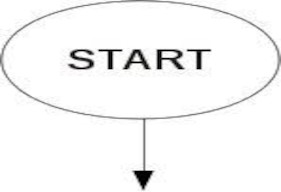
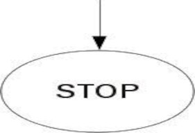
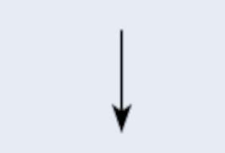
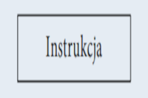
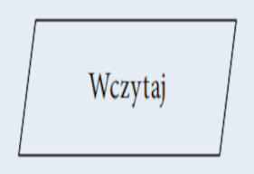
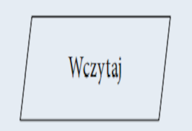
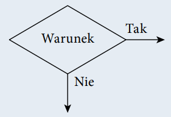
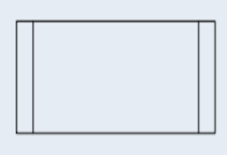
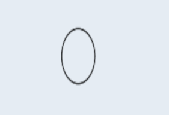
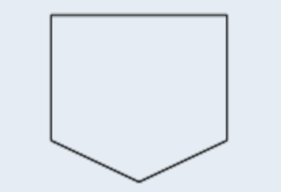

| Symbol |
Opis |
|  |
Początek algorytmu, start programu. Od tego miejsca rozpoczyna
się wykonywanie operacji. |
|  |
Koniec algorytmu, zakończenie programu. W tym miejscu następuje zakończenie wykonywania operacji. |
|  |
Połączenie między blokami. Wskazuje kolejność wykonywania
operacji. |
|  |
Wykonanie operacji, blok obliczeniowy. Wewnątrz tego symbolu
znajdują się operacje do wykonania. |
|  |
Wprowadzanie danych. Wewnątrz tego symbolu określamy dane
wejściowe, które muszą zostać wczytane. |
|  |
Wyprowadzanie danych. Wewnątrz tego symbolu określamy
dane wyjściowe, które powinny zostać wyprowadzone jako
wynik. |
|  |
Warunek logiczny, blok decyzyjny. Umożliwia tworzenie rozgałęzień w algorytmie. Jeżeli warunek jest spełniony, to następuje
przejście do gałęzi oznaczonej „Tak”, w przeciwnym razie następuje przejście do gałęzi oznaczonej „Nie”. |
|  |
Proces wstępnie zdefiniowany. Symbol ten oznacza dołączenie
podprogramu. |
|  |
Łącznik. Odwołanie na stronie. Służy do oznaczenia miejsc
łączenia schematu, na przykład gdyby linie łączące na schemacie
musiały się krzyżować |
|  |
Łącznik międzystronicowy. Służy do oznaczenia miejsc łączenia
schematu, gdy nie mieści się on na jednej stronie. |